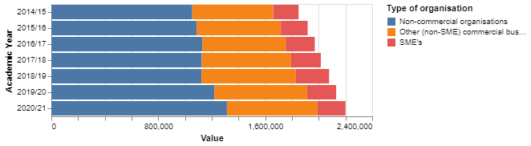

Introduction
Purpose
This book aims to provide a brief overview of the how data analysis can be performed using modern tools that have only recently become available. These tools will primarily be free and open source software developed to help the community by numerous contributors. There will also be a focus on producing Web based publications to facilitate dissemination of report contents.
About the Author
Dr John Halsall PhD
Following on from his PhD from Bangor University, and a successful academic career culminating in a postdoctoral appointment at the University College London developing ozone sensors, John then turned his talents to systems integration coding and management information for research assessment, student support, finance and business interaction within the university sector.
Since working as an independent consultant, John is now engaged in leveraging his skills in the commercial sector and now looks after an ever-growing portfolio of business activities.
Version control
The use of git a snapshots based system has allowed an increase in both collaborative working and source control.
Snapshots (or versions) vs Changes (or patches)
Git
Snapshots (or versions)
Pijul
Pijul is a Rust based version control system based on the theory of patches.
Document format
How to record and share the results of Analysis.
Word processors
Perhaps the bane of any analysts life; word processors merge content and format in an unmergeable blob.
Plain text is simple but visually basic.
Markdown
A simple way to format plain text files to allow human readability and version control while being able to render to html.
## Backticks
Three at the start of a code block
Comments within Markdown
`[comment]: # (This actually is the most platform independent comment)`
Three at the end of a code block
Python code block
my_list = [1, 2, 3, 4, 5]
for i in my_list:
print(i)
Subscript
Use the sub html tag
TextSubscript
Superscript
Use the sup html tag
TextSuperscript
Interactive Development Environment
How to see what's going on
To view and quickly process data the goto tool still remains Microsoft Excel. Also, PowerBI has become widely used to produce web hosted data dashboards. However, PowerBI's user interface is vastly different from Excel and so can be unintuitive to users that only have experience of using Excel.
Python
Python has become the de facto language for data Analysis due to its readability and wide range of analysis modules available, its built in Interactive Development Environment (IDE) IDLE is fairly basic, so it is usually used with an addition IDE such as the following;
Jupyter Notebooks
Jupyter Notebooks are now widely used in Science and Data Analysis as they are able to accommodate a range of languages and are an excellent tool for data exploration and visualisation.
Cons
- No good version control process
- Not suitable for fully automated processes
VScode
An excellent editor for multiple languages with many plugin tools available.
Cons
- Not so good as displaying output
Charts and plotting
Python
Python has a great many charting and plotting options. However, while embedded SVG files are useful for static reports their presentation in a web based report can appear rather dated. Hence the necessity to look at Javascript to chart summary data.
Altair
Plot.ly
Plotly appears to be well regarded within the Python community as a simple but powerful tool to provide quick and aesthetically pleasing charts.1
Plotly Python Library](https://plotly.com/python/)
HoloViews
mpld3
Including charts in markdown documents
Including html in Markdown document
Example of png file import

Example of svg file import

Examples of eCharts.html embedded file
Embedded script from echarts.js
Charts using Chart.js
<!doctype html>
My test chart
<canvas id="canvas" height="480" width="640"></canvas>
<script>
var chart_datacanvas =
{
labels: ['Apple', 'Orange', 'Banana', 'Steak'],
datasets: [{'data': [1, 2.5, 3, 1], 'fillColor': 'rgba(151,187,205,0.5)', 'strokeColor': 'rgba(151,187,205,0.8)', 'highlightFill': 'rgba(151,187,205,0.75)', 'highlightStroke': 'rgba(151,187,205,1)', 'pointColor': 'rgba(220,220,220,1)', 'pointStrokeColor': 'rgba(250,250,250,1)', 'pointHighlightFill': 'rgba(250,250,250,1)', 'pointHighlightStroke': 'rgba(220,220,220,1)'}, {'data': [3, 1.2, 0.1, 3], 'fillColor': 'rgba(220,220,220,0.5)', 'strokeColor': 'rgba(220,220,220,0.8)', 'highlightFill': 'rgba(220,220,220,0.75)', 'highlightStroke': 'rgba(220,220,220,1)', 'pointColor': 'rgba(220,220,220,1)', 'pointStrokeColor': 'rgba(250,250,250,1)', 'pointHighlightFill': 'rgba(250,250,250,1)', 'pointHighlightStroke': 'rgba(220,220,220,1)'}]
}
</script>
<script>
window.onload = function()
{{
var ctx = document.getElementById("canvas").getContext("2d");
var mychart = new Chart(ctx).Bar(chart_datacanvas, {responsive: true, barValueSpacing: 5, scaleShowGridLines: true, scaleBeginAtZero: false});
}}
</script>
</div>
</body>
Nested example
Nested README.md example
Sub-chapter
Polars
Diagrams
graph TD;
A-->B;
A-->C;
B-->D;
C-->D;
Here is a simple footnote1. With some additional text after it.
My reference.
Polars dataframe module
#!pip install polars
#!pip install altair
#!pip install pyarrow
import pyarrow
import polars as pl
from pathlib import Path
import altair as alt
import pandas as pd
import numpy as np
data_dir = Path("C:/Users/John/Data")
csvFile = data_dir / "Table-2a.csv"
df = pl.scan_csv(csvFile, skip_rows=11)
df.fetch(n_rows=5)
| UKPRN | HE Provider | Country of HE provider | Region of HE provider | Academic Year | Type of service | Type of organisation | Number/Value Marker | Unit | Number/Value |
|---|---|---|---|---|---|---|---|---|---|
| i64 | str | str | str | str | str | str | str | str | i64 |
| 10007783 | "The University... | "Scotland" | "Scotland" | "2014/15" | "Consultancy" | "SME's" | "Number" | null | 6 |
| 10007783 | "The University... | "Scotland" | "Scotland" | "2014/15" | "Consultancy" | "Other (non-SME... | "Number" | null | 59 |
| 10007783 | "The University... | "Scotland" | "Scotland" | "2014/15" | "Consultancy" | "Non-commercial... | "Number" | null | 34 |
| 10007783 | "The University... | "Scotland" | "Scotland" | "2014/15" | "Consultancy" | "Total" | "Number" | null | 99 |
| 10007783 | "The University... | "Scotland" | "Scotland" | "2014/15" | "Consultancy" | "SME's" | "Value" | "000s" | 53 |
colUse=df.fetch(n_rows=5).columns[4:]
print(colUse)
['Academic Year', 'Type of service', 'Type of organisation', 'Number/Value Marker', 'Unit', 'Number/Value']
df.fetch(n_rows=5).select(pl.col(
colUse)).filter(pl.col("Number/Value Marker")=="Value")
| Academic Year | Type of service | Type of organisation | Number/Value Marker | Unit | Number/Value |
|---|---|---|---|---|---|
| str | str | str | str | str | i64 |
| "2014/15" | "Consultancy" | "SME's" | "Value" | "000s" | 53 |
# q = (
# pl.scan_csv("iris.csv")
# .filter(pl.col("sepal_length") > 5)
# .groupby("species")
# .agg(pl.all().sum())
# )
# df = q.collect()
q=(
pl.scan_csv(csvFile, skip_rows=11)
.filter(pl.col("Number/Value Marker")=="Value")
.groupby(['Academic Year', 'Type of service', 'Type of organisation'])
.agg(pl.col("Number/Value").sum())
)
q.collect()
| Academic Year | Type of service | Type of organisation | Number/Value |
|---|---|---|---|
| str | str | str | i64 |
| "2016/17" | "Contract resea... | "SME's" | 64207 |
| "2019/20" | "Consultancy" | "SME's" | 63921 |
| "2014/15" | "Facilities and... | "Other (non-SME... | 61865 |
| "2020/21" | "Facilities and... | "Other (non-SME... | 64104 |
| "2015/16" | "Contract resea... | "Total" | 1248652 |
| "2018/19" | "Consultancy" | "Other (non-SME... | 113618 |
| "2017/18" | "Consultancy" | "Non-commercial... | 278511 |
| "2016/17" | "Facilities and... | "Other (non-SME... | 58840 |
| "2014/15" | "Consultancy" | "SME's" | 81275 |
| "2018/19" | "Facilities and... | "SME's" | 79414 |
| "2019/20" | "Facilities and... | "Total" | 225355 |
| "2020/21" | "Contract resea... | "Non-commercial... | 840801 |
| ... | ... | ... | ... |
| "2020/21" | "Contract resea... | "Other (non-SME... | 504057 |
| "2018/19" | "Consultancy" | "Non-commercial... | 288268 |
| "2015/16" | "Facilities and... | "Total" | 213062 |
| "2020/21" | "Consultancy" | "Total" | 509294 |
| "2019/20" | "Consultancy" | "Other (non-SME... | 105477 |
| "2018/19" | "Contract resea... | "SME's" | 88001 |
| "2016/17" | "Contract resea... | "Other (non-SME... | 450968 |
| "2017/18" | "Consultancy" | "Other (non-SME... | 113827 |
| "2014/15" | "Contract resea... | "Total" | 1209381 |
| "2014/15" | "Facilities and... | "Non-commercial... | 70701 |
| "2017/18" | "Contract resea... | "Total" | 1318792 |
| "2020/21" | "Facilities and... | "Non-commercial... | 147964 |
q.collect().sort(pl.col("Number/Value"))
| Academic Year | Type of service | Type of organisation | Number/Value |
|---|---|---|---|
| str | str | str | i64 |
| "2014/15" | "Contract resea... | "SME's" | 48474 |
| "2015/16" | "Contract resea... | "SME's" | 54268 |
| "2016/17" | "Facilities and... | "Other (non-SME... | 58840 |
| "2014/15" | "Facilities and... | "SME's" | 59182 |
| "2017/18" | "Facilities and... | "Other (non-SME... | 60791 |
| "2020/21" | "Facilities and... | "SME's" | 61182 |
| "2014/15" | "Facilities and... | "Other (non-SME... | 61865 |
| "2015/16" | "Facilities and... | "SME's" | 62396 |
| "2015/16" | "Facilities and... | "Other (non-SME... | 63320 |
| "2019/20" | "Consultancy" | "SME's" | 63921 |
| "2020/21" | "Facilities and... | "Other (non-SME... | 64104 |
| "2016/17" | "Contract resea... | "SME's" | 64207 |
| ... | ... | ... | ... |
| "2015/16" | "Contract resea... | "Non-commercial... | 740139 |
| "2017/18" | "Contract resea... | "Non-commercial... | 751853 |
| "2016/17" | "Contract resea... | "Non-commercial... | 772558 |
| "2019/20" | "Contract resea... | "Non-commercial... | 828242 |
| "2020/21" | "Contract resea... | "Non-commercial... | 840801 |
| "2014/15" | "Contract resea... | "Total" | 1209381 |
| "2015/16" | "Contract resea... | "Total" | 1248652 |
| "2016/17" | "Contract resea... | "Total" | 1287733 |
| "2017/18" | "Contract resea... | "Total" | 1318792 |
| "2018/19" | "Contract resea... | "Total" | 1349980 |
| "2020/21" | "Contract resea... | "Total" | 1417724 |
| "2019/20" | "Contract resea... | "Total" | 1437337 |
data = alt.Data(values=[{'x': 'A', 'y': 5}, {'x': 'B', 'y': 3}, {'x': 'C', 'y': 6}, {'x': 'D', 'y': 7}, {'x': 'E', 'y': 2}])
df=q.collect()
#df.write_csv(data_dir / 'test.csv')
df.write_json(data_dir / 'test.json')
#list(df[pl.col(['Academic Year', 'Type of service', 'Type of organisation'])])
#data = alt.Data(data_dir / 'test.json')
# .(pl.col("Number/Value").over(pl.col("Type of service").alias("sum")\
# pl.scan_csv(
# csvFile, skip_rows=11)\
# .filter(pl.col("Number/Value Marker")=="Value")\
# .sort(pl.col("Number/Value"), reverse=True)\
# .collect()
data=pl.scan_csv(
csvFile, skip_rows=11)\
.filter((pl.col("Number/Value Marker")=="Value") & (pl.col("Type of organisation")!="Total"))\
.sort(pl.col("Number/Value"), reverse=True)\
.collect().to_pandas()
# .groupby(['Academic Year', 'Type of service', 'Type of organisation'])
q=(
pl.scan_csv(csvFile, skip_rows=11)
.filter((pl.col("Number/Value Marker")=="Value") & (pl.col("Type of organisation")!="Total"))\
.groupby((["Academic Year", "Type of organisation"]))
.agg(pl.col("Number/Value").sum().alias("Value"))
.sort(pl.col(["Academic Year", "Type of organisation"]))
)
q.collect()
| Academic Year | Type of organisation | Value |
|---|---|---|
| str | str | i64 |
| "2014/15" | "Non-commercial... | 1054040 |
| "2014/15" | "Other (non-SME... | 606228 |
| "2014/15" | "SME's" | 188931 |
| "2015/16" | "Non-commercial... | 1087274 |
| "2015/16" | "Other (non-SME... | 629597 |
| "2015/16" | "SME's" | 200689 |
| "2016/17" | "Non-commercial... | 1129121 |
| "2016/17" | "Other (non-SME... | 624115 |
| "2016/17" | "SME's" | 217219 |
| "2017/18" | "Non-commercial... | 1124997 |
| "2017/18" | "Other (non-SME... | 668466 |
| "2017/18" | "SME's" | 222392 |
| "2018/19" | "Non-commercial... | 1122699 |
| "2018/19" | "Other (non-SME... | 704394 |
| "2018/19" | "SME's" | 250591 |
| "2019/20" | "Non-commercial... | 1219267 |
| "2019/20" | "Other (non-SME... | 693636 |
| "2019/20" | "SME's" | 217653 |
| "2020/21" | "Non-commercial... | 1313555 |
| "2020/21" | "Other (non-SME... | 677397 |
| "2020/21" | "SME's" | 209316 |
data=q.collect().to_pandas()
data.head(3)
| Academic Year | Type of organisation | Value | |
|---|---|---|---|
| 0 | 2014/15 | Non-commercial organisations | 1054040 |
| 1 | 2014/15 | Other (non-SME) commercial businesses | 606228 |
| 2 | 2014/15 | SME's | 188931 |
chart=alt.Chart(data)
chart.mark_bar().encode(
y='Academic Year',
x='Value',
color="Type of organisation"
)
chart.mark_arc().encode(
theta=alt.Theta(field="Number/Value", type="quantitative"),
color=alt.Color(field="Academic Year", type="nominal"),
)